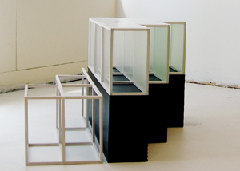

Theodora Varnay Jones Exhibition: November 7 - February 10, 2010
|
 |
The San Jose Institute of Contemporary Art (ICA) presents Manifold, a solo exhibition by postminimalist sculptor and installation artist Theodora Varnay Jones. Manifold will be on view from November 7, 2009 through February 20, 2010. The installation in the ICA’s Focus Gallery provides visitors with a unique opportunity to see the breadth, depth and evolution of Varnay Jones’ work over the past fifteen years. Comprised of two-and three-dimensional works including drawings, constructed works and re-conceptualized ready-made pieces, the exhibition reflects the artist’s systematic exploration of repetition, form and material. A public reception will be held on Friday, November 6th from 6pm to 8pm.
By using opposing media such as paper and rocks, fiberglass and beeswax, clay and gauze, Varnay Jones creates objects infused with a palpable tension between the conflicting nature of the materials and the equilibrium of their carefully balanced compositions. The resulting forms are open-ended and ambiguous, while also evoking concepts related to invisibility, emptiness, memory, perception, and time. The artist’s careful layering of translucent and transparent materials traps light within her works, creating restlessness between what is revealed and what is concealed within the multiple layers of each piece. The objects often reveal subtle hints at their hand-made quality despite the precision of their construction.
“Throughout our 29-year history, the ICA has maintained a reputation for discovering new talent as well as providing meaningful exposure for under-recognized mid-career artists,” says ICA Executive Director, Cathy Kimball. “During the past 30 years, Theodora has created a diverse body of work that includes sculpture, drawings, prints, assemblages and installations. Manifold presents an exciting and unique opportunity to see and experience how this accomplished artist’s work has evolved during the last decade," explains Kimball.
A Talking Art conversation with Varnay Jones will be held on Thursday, January 14, 2010 from 7pm to 9pm at the ICA. An accomplished printmaker, Varnay Jones has also been invited to participate in the ICA Print Center’s 2010 Artist in Residence Program.
Hungarian-born Varnay Jones has lived in San Francisco for over thirty-five years. She received her BFA and MFA from the Academy of Fine Arts in Budapest. Her works have been exhibited extensively, nationally, and in Europe and Asia and she has received numerous awards and grants.
Also opening on November 7th at the ICA, Afterlife – a group exhibition of works that explores new meanings and new lives of discarded and re-used materials. The show will be on view in the ICA’s Main Gallery and Cardinale Project Room through January 23, 2010. Guest curated by Kathryn Funk, Afterlife includes sculpture, video, and multi-media work from artists Claudia Borgna, Mark Fox-Morgan, Elisabeth Higgins O’Connor, Lisa Kokin, Charlotte Kruk, Robert Larson, Scott Oliver, Beverly Rayner, and Ann Weber. A public reception will be held on Friday, November 6, 2009 from 6pm to 8pm.
Night Moves, after-dark programming in the ICA’s front windows presents Fish out of Water, a video piece by artist Claudia Borgna, on view from November 7, 2009 through January 23, 2010.
# # #
San
Jose Institute of Contemporary Art 560 South First Street San Jose, CA 95113 tel (408) 283-8155 fax (408) 283-8157 |